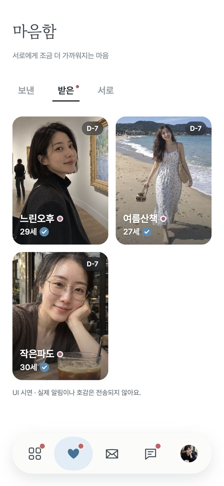
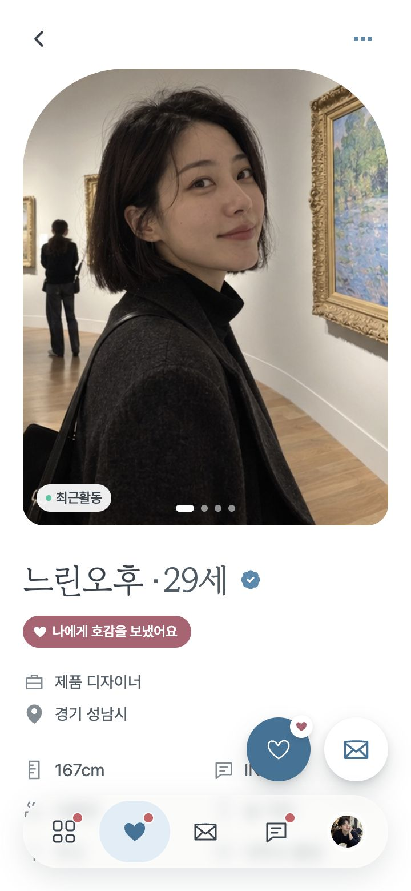
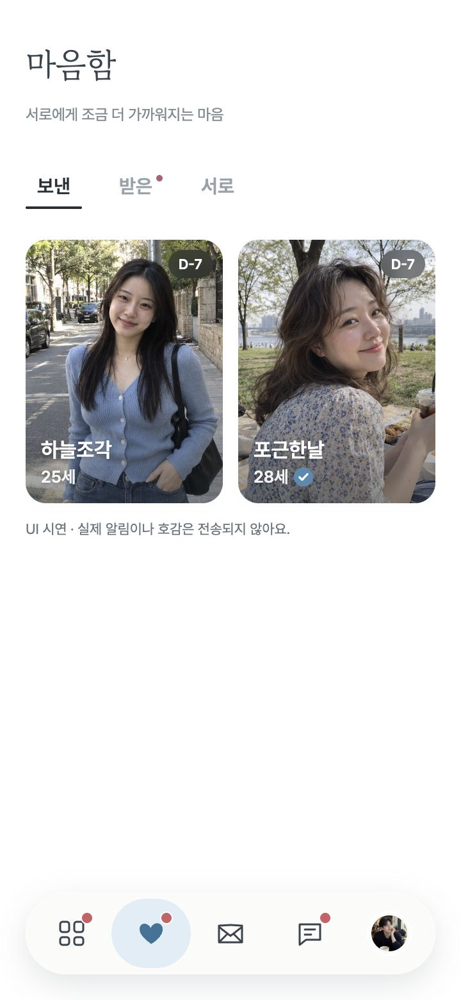
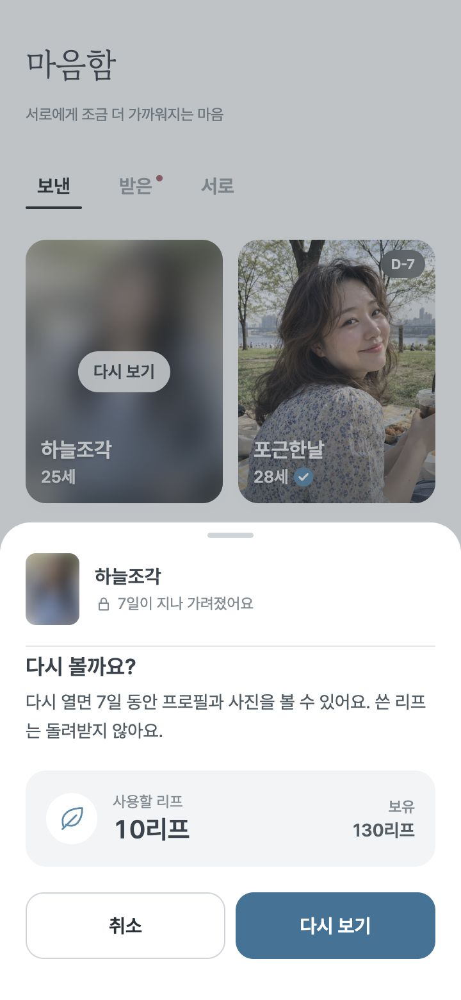
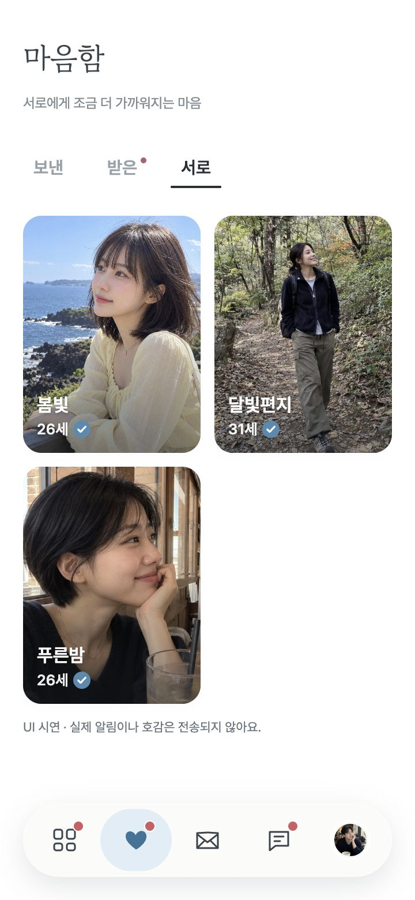
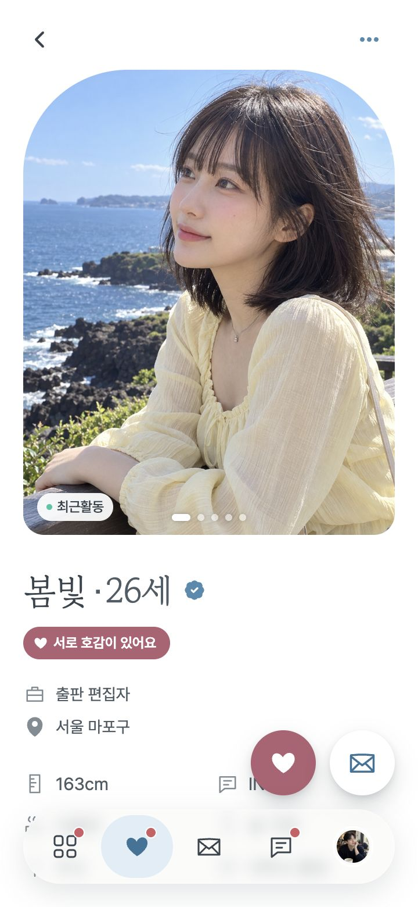
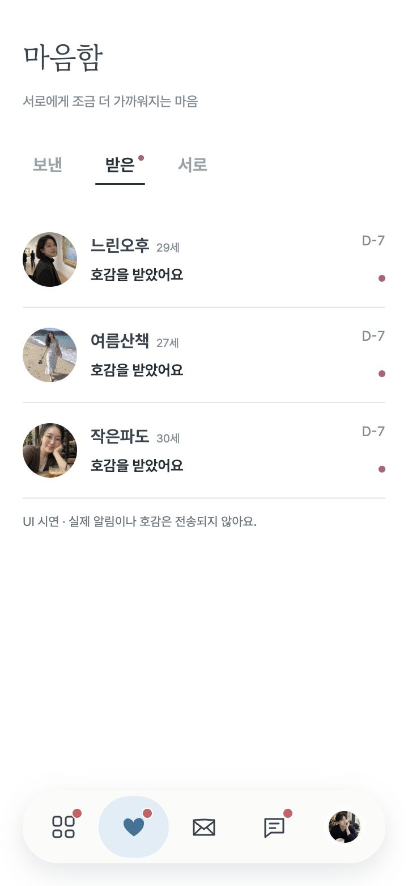
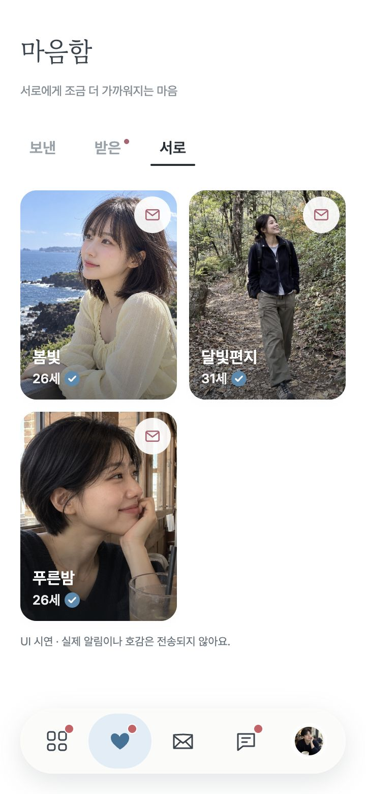
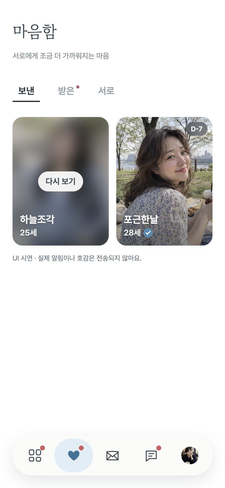

마음함 · 목록 대신 사진 카드
- 예전 카드(11-17 마음함 하트 줄이기 시안)를 지금 결로 다시: 두 칸 사진 카드에 이름 · 나이 · 인증 배지만. 소개 글 · 해시태그 · "호감을 받았어요" 문구는 없어요.
- 사진 위: 오른쪽 위 남은 기간 D-n(어두운 반투명 칩, 인연 홈 숫자 칩과 같은 모양). 새로 온 마음은 이름 옆 장미색 점. 아래쪽은 인연 카드와 같은 옅은 어둠(G3).
- 서로: D-n 대신 오른쪽 위 흰 동그라미 편지 아이콘 — 누르면 편지 쓰기(지금 목록과 같은 기능).
- 기간 지남: 사진을 흐리게 + 가운데 "다시 보기".
- 탭(보낸 · 받은 · 서로, 새 소식 점)과 아래 안내는 지금 그대로. 누르면 살짝 작아져요.
흐름대로 · 서로 탭은 칩 없이
- 서로 탭: 탭 이름이 이미 "서로"라 카드 위 칩 · 편지 아이콘 없이 사진 · 이름 · 나이 · 배지만. 편지는 카드를 눌러 들어간 프로필의 편지 버튼으로.
- 받은 · 보낸 칩(D-n)은 어두운 반투명 그대로.







지금 · 예전


시안



